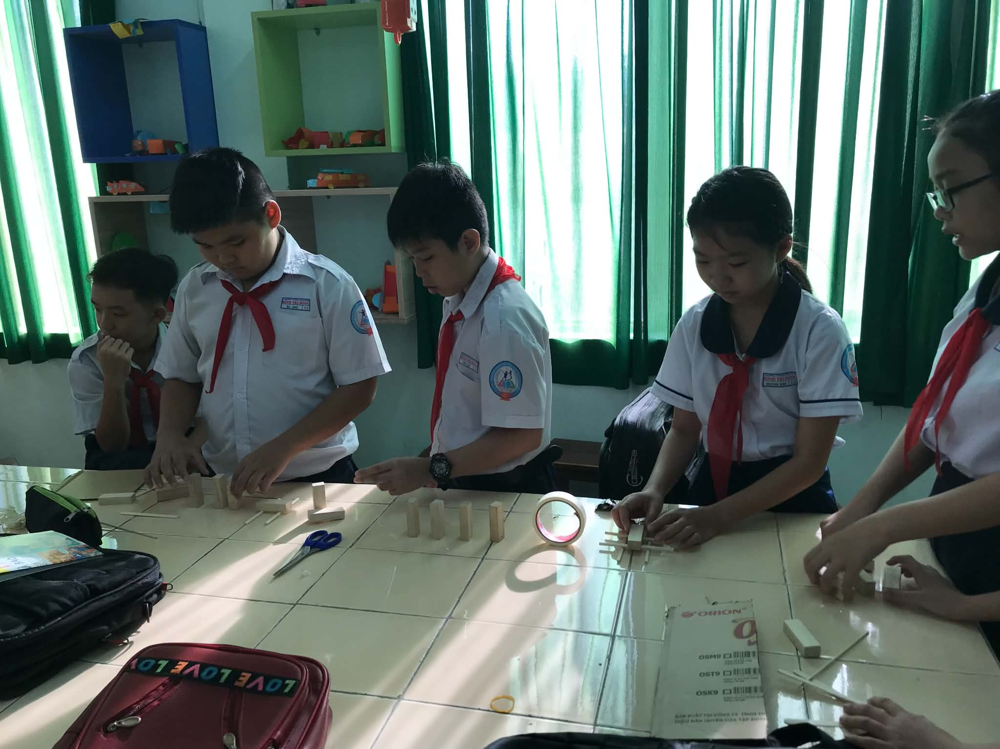
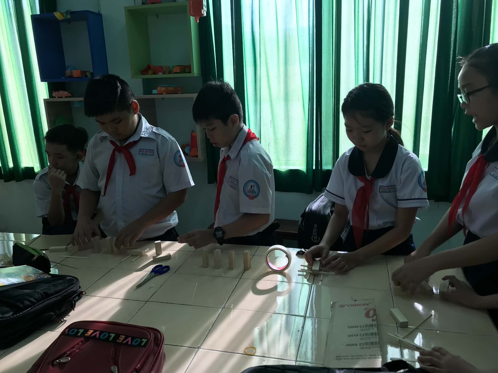
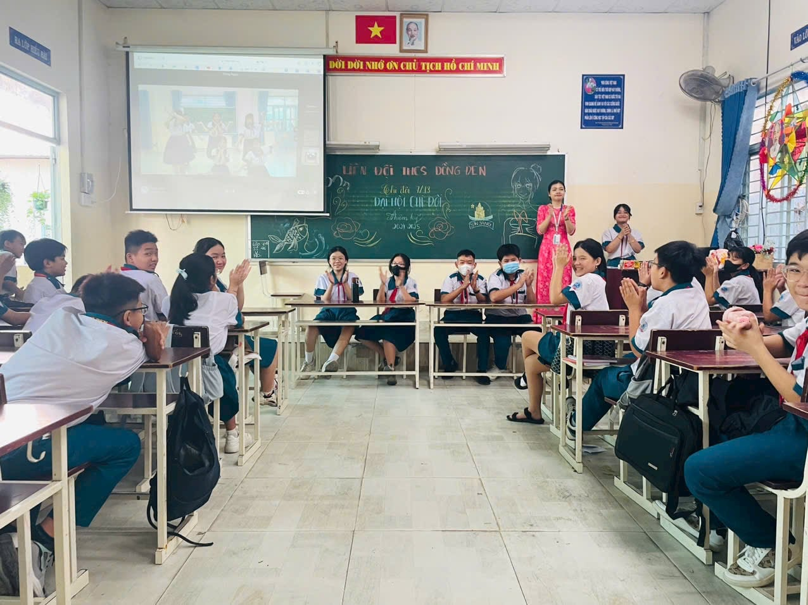
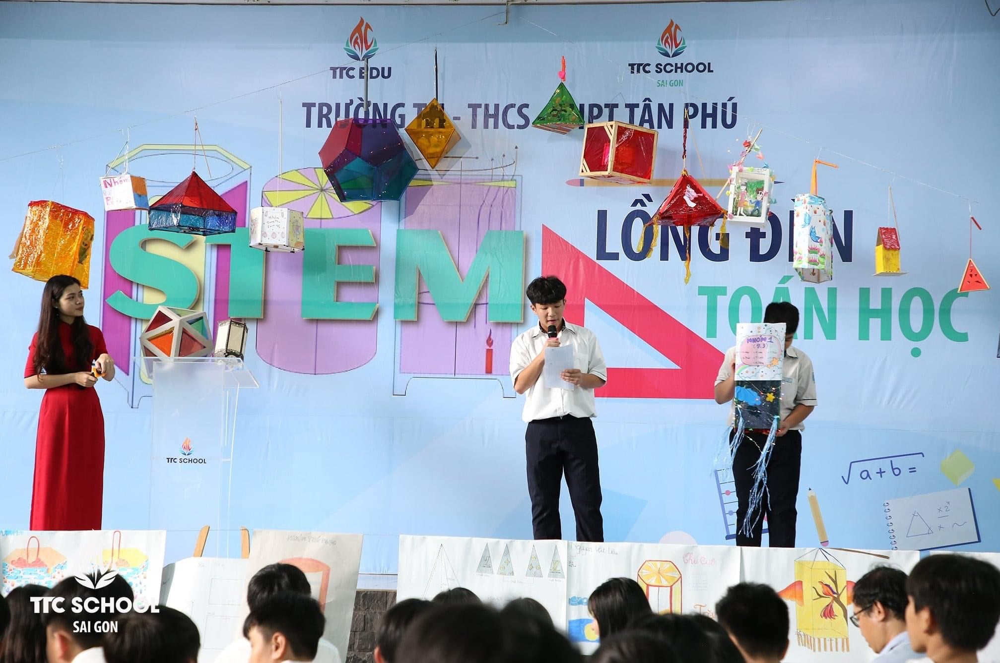

1. Introduction to the Math Mastery Combo (Giới thiệu Combo Học giỏi Toán)
Overview of the 3-course Mathematics pathway: Foundation Math, Advanced Math, and Singapore IQ Math.
Watch on YouTube ↗A collection of my mathematics and STEM education projects, online courses, curriculum development initiatives, and interactive lessons designed to make learning intuitive and engaging.
Featured Instructor (Ms. Thu Ha / Hana Nguyen) — Primary & Singapore IQ Mathematics
HOC247 Kids is a premier online learning platform designed for primary school students (Grades 1–5) in Vietnam. As a featured Singapore IQ Mathematics Instructor (Cô Thu Hà) on the platform, I designed and delivered interactive video lessons for the "Combo Học Giỏi Toán" (Comprehensive Math Mastery Combo) and "Toán IQ Singapore" (Singapore IQ Math) courses.
Applied the CPA (Concrete – Pictorial – Abstract) approach to transform challenging concepts—such as queueing problems, matchstick puzzles, clock & time intervals, and logic patterns—into vivid, relatable visual lessons.
Honors Graduate in Mathematics Education with 4+ years of experience teaching Mathematics and English-medium Mathematics. Guided by the belief that "Mathematics is all around us—helping us organize, measure, calculate, and think logically every day."
Watch selected video lectures and course introductions from the HOC247 Kids Mathematics program below:
Overview of the 3-course Mathematics pathway: Foundation Math, Advanced Math, and Singapore IQ Math.
Watch on YouTube ↗Visual step-by-step reasoning lesson helping young learners master ordering and queueing word problems.
Watch on YouTube ↗Developing logical thinking, observation, and problem-solving skills for Grade 1 students.
Watch on YouTube ↗Experiential STEM learning, applied mathematics, and collaborative project-based activities in secondary and high schools
Guided secondary school students through hands-on STEM experiments and model-building activities, encouraging learners to apply mathematical geometry, measurement, and scientific inquiry to real-world challenges.


Organized interactive STEM workshops and collaborative engineering-mathematics projects for secondary and high school students, fostering critical thinking, teamwork, and creative problem-solving skills.


New teaching resources, HSC & IGCSE study guides, and learning projects will be updated here.